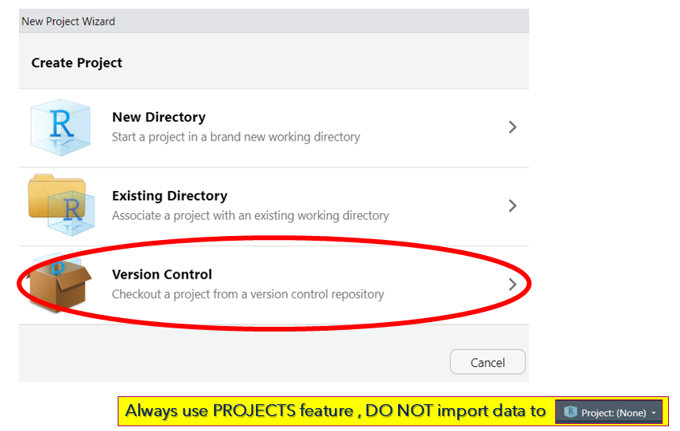
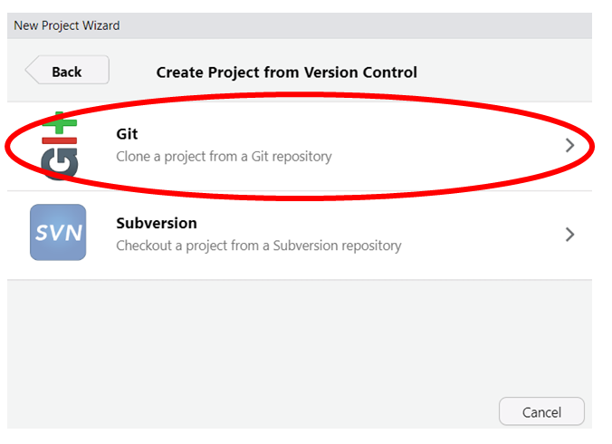
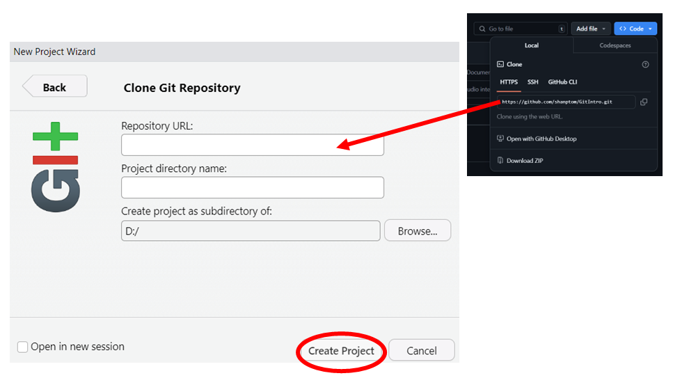
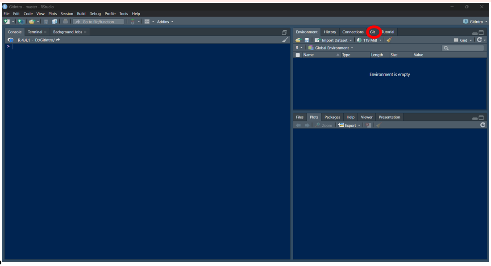
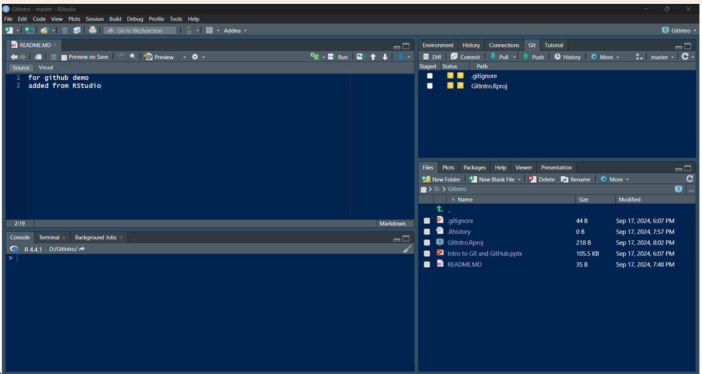
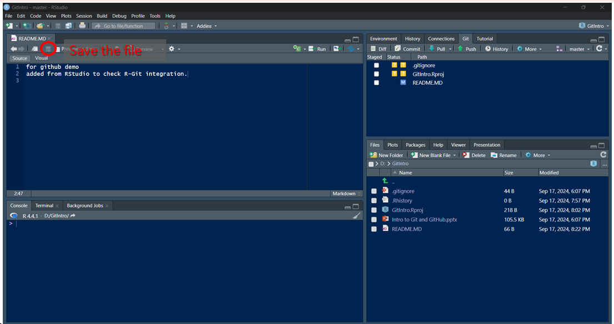
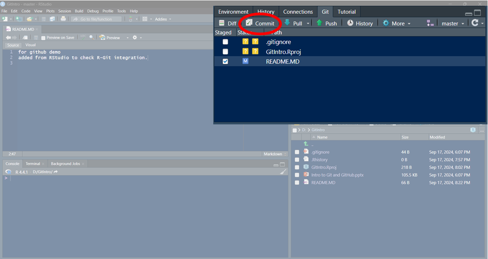
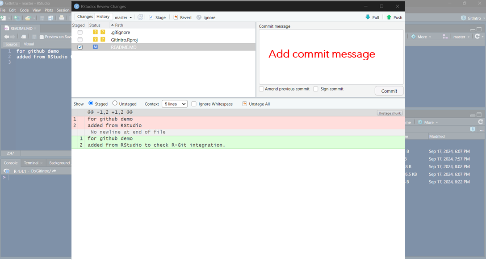
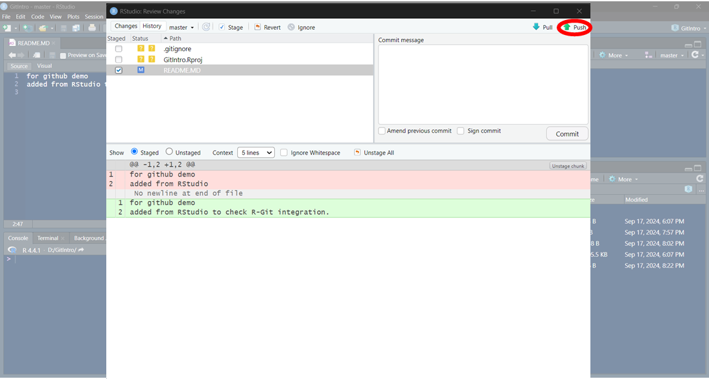

Git and GitHub
I used to save multiple copies of files like:
- report_draft_v1.docx
- report_draft_v2_final.docx
- report_FINAL_v3.docx
This quickly becomes messy—it’s hard to track changes, and files take up unnecessary space. Instead of saving multiple versions inside a single file (like the google docs) makes folders clutter free and accessing different versions easier. Version Control Systems enable storing multiple versions inside a single file and among the many Version Control Systems , Git is the most popular.
Git is a free, open-source version control system that:
- Tracks every change in your files (code, documents, scripts, etc.).
- Lets you revert to any previous version if something goes wrong.
- Prevents the need for duplicate files (no more _final_final naming chaos!).
Instead of manually saving copies, Git keeps a complete history of modifications, so you can always go back in time.
Installing Git
Git is preinstalled on macOS and Linux, so you can start using it right away.
Windows Users: Downloading Git
If you’re on Windows, follow these steps:
1. Download Git from the official website: https://git-scm.com/
2. Choose the correct version for your system (64-bit or 32-bit).
- Avoid the “Portable” edition—it’s meant for advanced use cases.
3. Run the installer and follow the default settings (no need to customize).
After installing, open:
- Command Prompt (Windows)
- Terminal (macOS/Linux)
Then, type:
git --versionIf you see a version number (e.g., git version 2.40.1), Git is ready to use!
Setting Up Git in a Project Folder
After installing Git, follow these steps to start tracking changes in your project:
- Navigate to the folder containing your project files.
- Windows:
- Right-click in the folder → Select “Open Git Bash here” (this opens Git’s command-line tool).
- Right-click in the folder → Select “Open Git Bash here” (this opens Git’s command-line tool).
- Mac/Linux (Terminal) or Windows (CMD/PowerShell):
- Open your terminal and navigate to the folder using:
cd /path/to/your/project- Run the following command to start tracking changes:
git init- This creates a hidden
.gitfolder that stores all version history.
Exclude Unwanted Files (Optional) Some files (like large datasets, logs, or sensitive info) shouldn’t be tracked. To ignore them:
Create a .gitignore file:
- Open a text editor (VS Code, Notepad, etc.) and create a blank text file. - List files/folders to exclude (one per line):
```bash
# Example .gitignore file
credentials.txt
raw_data/
*.log
.env
``` - Save the file as
.gitignorein your project’s root folder.
Git will now skip these files when tracking changes.
Verify Setup
Check tracked files with:
git statusUntracked files (not in
.gitignore) will appear in red.
Now your project is version-controlled!
Git Workflow: Basic Steps
1. Staging Files
Git doesn’t track files automatically—you must stage them first.
You create a new file, Scripts.R, containing R code. To start tracking it run:
git add Scripts.RStaging Multiple Files at Once
- To stage all new/modified files in the folder, run:
git add .Add only specific files:
git add file1.R file2.py
2. Committing Changes
A commit saves a snapshot of your project at a specific time.
How to Commit
After staging files, save the version with:
git commit -m "Initial script with basic data cleaning"-mlets you add a short commit message (required).
- A good message explains what changed (e.g., “Added regression model”).
Example Workflow
1. While modifying Scripts.R you introduced a bug.
2. To revert to the last working version:
- Check your commit history:
git log- Copy the commit ID (e.g.,
d3b4a1c....) and restore it:
git checkout d3b4a1c Scripts.R
git log screenshotKey Takeaways
Stage changes → git add <file>
Save snapshots → git commit -m "message"
Recover old versions → git log + git checkout <commit>
This workflow keeps your project organized and safe from accidental errors.
3. Pushing to GitHub: Collaborative Version Control
Why Use GitHub?
While Git tracks changes locally, GitHub serves as a centralized cloud platform for: - Team collaboration – Multiple contributors can work on the same project simultaneously.
- Version synchronization – No more emailing files; everyone pulls/pushes updates to a shared repository.
- Backup & recovery – Safeguard your project against local hardware failures.
How It Works
- Local (Git)
- You commit changes on your computer.
- You commit changes on your computer.
- Remote (GitHub)
- You
pushthose commits to GitHub, making them available to your team.
- Teammates
pullthe latest version to their local machines.
- You
Alternatives
- GitLab, Bitbucket – Similar platforms with different features.
4. Setting Up GitHub for Git
Step 1: Create a GitHub Account
- Go to GitHub.com and sign up.
- Verify your email.
Step 2: Generate a Personal Access Token (PAT)
GitHub requires a PAT (instead of passwords) for secure Git connections.
To create one:
1. Navigate to:
Profile > Settings > Developer Settings > Personal Access Tokens > Generate New Token
2. Set:
- Expiration: Choose a duration (e.g., 30 days).
- Permissions: Check repo (full control of private repositories).
3. Copy the token and store it securely (it won’t be shown again!).
Step 3: Link Git to GitHub
Configure Git with your GitHub credentials:
git config --global user.name "YourGitHubUsername" git config --global user.email "your.email@example.com"Authenticate with your PAT when pushing/pulling.
5. Connecting Your Local Git Repository to GitHub
Now that you have a local Git repository and a GitHub account, let’s upload your project to GitHub for collaboration and backup.
1. Create a New Repository on GitHub
- Go to GitHub.com → Click “New repository”
- Enter a Repository name (e.g.,
my-project)
- Do not initialize with
README.md,.gitignore, or license (since your local repo already exists).
- Click “Create repository”
2. Link Your Local Repository to GitHub
Copy the URL of your new GitHub repo (e.g.,
https://github.com/your-username/my-project.git)
In your local Git terminal (Git Bash, Terminal, or CMD), run:
git remote add origin https://github.com/your-username/my-project.gitMakes sure you are running it from your local project directory
3. Push Your Files to GitHub
Stage all changes:
git add .(Or stage specific files with
git add file1.txt file2.R)Commit with a descriptive message:
git commit -m "Initial upload: data cleaning scripts"Push to GitHub:
git push -u origin main-usetsorigin mainas the default remote branch (so next time, justgit pushwill work).
Troubleshooting
- Error: Remote ‘origin’ already exists?
Rungit remote remove originfirst, then re-add.
- Permission denied?
Make sure you’ve entered the correct PAT (Personal Access Token) when prompted.
What Happens Now?
Your local files are now on GitHub.
Teammates can git clone your repo to contribute.
Future changes can be pushed with just git push.
Your project is now backed up, shareable, and ready for collaboration!
5. Forking a Repository on GitHub
What is Forking?
Forking creates your personal copy of someone else’s repository on GitHub. This allows you to: - Experiment with changes without affecting the original project
- Contribute to open-source projects
- Use others’ code as a starting point for your own projects
How to Fork a Repository
- On GitHub, navigate to the repository you want to fork
- Click the “Fork” button (top-right corner)
- Select your account as the destination (if you belong to organizations)
Now you have an independent copy under your GitHub account!
Working with Your Fork
To get the code on your local machine:
git clone https://github.com/your-username/forked-repo.git
cd forked-repoThis downloads the repository to your computer.
Keeping Your Fork Updated
To sync with the original repository: 1. Add the original as a remote:
git remote add upstream https://github.com/original-owner/original-repo.git- Fetch updates:
git fetch upstream- Merge changes:
git merge upstream/mainContributing Back
If you’ve made improvements: 1. Push to your fork:
git push origin main- Create a Pull Request on GitHub to suggest your changes to the original project
Key Points
- Forking is non-destructive (the original repo remains unchanged)
- Your fork exists independently on your GitHub account
- You control what changes get merged back to the original project
6. Cloning a GitHub Repository to Your Local Machine
Cloning downloads a full copy of a GitHub repository (including all files, branches, and commit history) to your local computer. This lets you:
- Work on projects offline
- Contribute to team/shared repositories
- Experiment with code without affecting the original
How to Clone a Repository
1. Get the Repository URL
On GitHub:
1. Navigate to the repository you want to clone
2. Click the green “Code” button
3. Copy the HTTPS URL (e.g., https://github.com/user/repo.git)
2. Clone the Repository
In your terminal (Git Bash, Terminal, or CMD), run:
git clone https://github.com/user/repo.gitThis creates a local folder with the repository’s contents.
To specify a custom folder name:
git clone https://github.com/user/repo.git my-folder
Working with a Cloned Repository
Once cloned, you can:
1. Make changes → Edit files as needed
2. Stage changes → git add .
3. Commit changes → git commit -m "Your message"
4. Push changes (if you have write access):
sh git push origin main
Key Notes
Cloning is different from forking:
- Forking = Creates your GitHub copy of a repo
- Cloning = Downloads any repo (yours or others’) to your computer
Always git pull before working to get the latest changes from teammates!
7. Using git pull to Sync Remote Changes
Why Pulling is Necessary
When collaborating on shared repositories: - Other contributors may push changes to the remote (GitHub) repo - Your local copy becomes outdated - Git prevents git push until you sync these changes to avoid conflicts
How Pulling Works
git pull performs two actions: 1. Fetches all new changes from the remote repository 2. Merges them into your local branch
When to Use git pull
Before starting work on shared files
When you see this error:
! [rejected] main -> main (non-fast-forward) error: failed to push some refs... hint: Updates were rejected because the remote contains work you don't have locally
Basic Pull Command
git pull origin mainorigin= Remote repository name (default)main= Branch name
Resolving Merge Conflicts
If remote changes conflict with your local changes: 1. Git will mark conflicted files 2. Manually edit files to resolve conflicts 3. Mark as resolved: sh git add <file> git commit -m "Resolved merge conflicts"
Best Practices
Always pull before pushing:
git pull && git pushConsider using
git pull --rebasefor cleaner history (advanced)Pull frequently to minimize large merge conflicts
Visualizing the Process
Your Local: A -- B -- C
Remote: A -- B -- D -- E
After git pull:
Your Local: A -- B -- C -- D -- E8. Creating and switching branches (git branch)
Git branches allow you to experiment with changes in a project without affecting the original (main) version. Each branch acts as an independent workspace where you can modify files, test new approaches, and refine your work before deciding whether to incorporate those changes into the primary codebase.
Example Scenario: Comparing Two Data Analysis Methods
Suppose you are working on a dataset and want to compare two different analysis techniques:
- Start with the Main Branch
- The
mainbranch (ormasterin older repos) contains the original, stable version of your project.
- You clean and preprocess the dataset in
main, ensuring a reliable baseline.
- The
- Create a New Branch for the First Analysis Method
- Use
git checkout -b analysis_method1to create and switch to a new branch.
- Here, you implement your first analysis approach, making changes without affecting
main.
- Use
- Create a Second Branch for the Alternative Method
- Switch back to
main(git checkout main) to ensure a clean starting point.
- Create another branch:
git checkout -b analysis_method2.
- Develop and test the second analysis technique independently.
- Switch back to
- Compare Results and Merge the Best Approach
- After evaluating both methods, decide which one performs better.
- Merge the preferred branch into
main(e.g.,git merge analysis_method1).
- The other branch (
analysis_method2) can be kept for reference or discarded.
- After evaluating both methods, decide which one performs better.
Key Commands Used:
git branch→ Lists all branches.
git checkout -b <branch_name>→ Creates and switches to a new branch.
git push origin <branch_name>→ Uploads the branch to a remote repository (e.g., GitHub).
git merge <branch_name>→ Combines the specified branch into your current branch (e.g.,main).
Why This Workflow Matters:
- Isolation of Changes: Each analysis method is developed separately, preventing conflicts.
- Experimentation Without Risk: If one method fails,
mainremains unaffected.
- Controlled Integration: Only validated changes are merged, maintaining project stability.
By using branches, you ensure a structured, reversible, and collaborative workflow—especially useful in data science, software development, and research.
9. Merging Changes with git merge
When to Use Merge
Merging combines changes from different branches into one. Common scenarios: - Combining a feature branch back into main - Incorporating teammates’ work into your branch - Finalizing approved pull requests
Basic Merge Workflow
Checkout the target branch (where you want to merge into)
git checkout mainPull latest changes (always sync first!)
git pull origin mainMerge your feature branch
git merge feature-branch
Merge Conflict Resolution
When Git can’t automatically combine changes: 1. Git will mark conflicted files 2. Open files and look for conflict markers: <<<<<<< HEAD Your local changes ======= Incoming changes >>>>>>> feature-branch 3. Manually edit to resolve, then: sh git add resolved-file.txt git commit
Best Practices
Always merge into the target branch (checkout main first)
Test merged code before pushing
Delete merged branches to keep repo clean: sh git branch -d feature-branch
Visual Example
ABC feature-branch
/ \
main DE--F (merge commit)10. Temporarily Setting Changes Aside with git stash
Assume you’re working on Analysis Step 3, but a collaborator wants you to fix to something in Analysis Step 2 and need updated file: - If you switch branches now, your unfinished Step 3 changes would either: - Get accidentally committed with the Step 2 fix (causing confusion), or - Force you to lose your Step 3 progress
** git stash**
Stashing lets you temporarily shelve uncommitted changes so you can: 1. Cleanly switch tasks 2. Push urgent fixes 3. Later restore your exact working state
How to Use Git Stash
1. Stash Your Current Changes
git stash push -m "WIP: Analysis Step 3"-madds a descriptive message (recommended)- This saves all modified tracked files (both staged & unstaged)
2. Verify Changes Are Shelved
git stash list # Shows all stashes
git status # Shows clean working directory3. Make Your Urgent Fix
git checkout main
# Switch to correct branch and make changes for Analysis Step 2
git add .
git commit -m "Fixed analysis step 2"
git push origin main4. Restore Your Work
git stash pop # Restores most recent stash AND removes it from stash listAlternative:
git stash apply # Keeps stash in list for reuseKey Benefits
Clean context switching - No half-finished code in commits
Emergency fix readiness - Handle urgent requests without losing progress
Multi-task management - Juggle multiple features/bugs simultaneously
Running git from R Studio
R Studio has built-in Git GUI window for streamlined workflows. If you already set up git in your project directory , choose Existing directory and proceed. If you want to clone a GitHub repo, select Version Control.

Select Git

Go to GitHub and copy the the url for GitHub repo. 
The new project will have Git Window enabled. If you open a git enabled project directory, it will automatically enable the Git window.

Open the file



Once you saved the modified file, it will appear on Git window.

Click the checkbox to stage files (=git add)

Then click commit (= git commit)

Add the commit message on the pop up window.

Click push to send changes to GitHub

Cheat sheet
# Git Cheat Sheet: Essential Commands
## Setup & Configuration
```sh
git config --global user.name "Your Name" # Set username
git config --global user.email "your@email.com" # Set email
git config --list # View settingsRepository Basics
git init # Initialize new repo
git clone <repo-url> # Clone existing repo
git status # Show working directory statusStaging & Committing
git add <file> # Stage specific file
git add . # Stage all changes
git commit -m "Commit message" # Commit staged changes
git commit --amend # Edit last commitBranching
git branch # List branches
git branch <name> # Create new branch
git checkout <branch> # Switch branches
git checkout -b <new-branch> # Create & switch to branch
git merge <branch> # Merge branch into currentRemote Repositories
git remote add origin <url> # Add remote repository
git push -u origin <branch> # Push branch to remote
git pull origin <branch> # Pull remote changes
git fetch # Download objects without mergingUndoing Changes
git restore <file> # Discard unstaged changes
git reset <file> # Unstage file
git reset --hard HEAD # Discard all local changes
git revert <commit-hash> # Create undo commitStashing
git stash # Stash current changes
git stash list # List stashes
git stash pop # Apply most recent stash
git stash apply stash@{n} # Apply specific stashLog & History
git log # Show commit history
git log --oneline # Compact history
git log --graph # Visual branch history
git diff # Show unstaged changesCollaboration
git fork # Fork a repo (GitHub web UI)
git pull-request # Create PR (GitHub CLI)
git cherry-pick <commit> # Apply specific commit.gitignore
Create .gitignore file to exclude: - Local config files - Dependencies (node_modules/) - Sensitive data (.env) - System files (.DS_Store)
Pro Tip: Use git <command> --help for detailed documentation on any command.